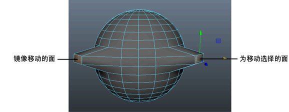

当使用变换工具编辑模型时，“对称设置”(Symmetry Settings)用于进行对称更改。

对称地变换组件
- 激活对称。
- 在网格的某一半上选择要移动、旋转或缩放的组件。
提示： 您可以先高亮显示组件，然后再实际选择它们。当移动光标靠近组件时，最近的组件上会显示彩色亮显。请参见
选择组件前亮显组件。
变换操纵器会捕捉到当前选择，网格另一侧上的组件也会被选中。
注： 您也可以在“工具设置”(Tool Settings)中启用“软选择”(Soft Selection)，以快速扩展您的选择。
- 移动、旋转或缩放所选的组件。
对象另一侧上的对应组件也会进行变换。